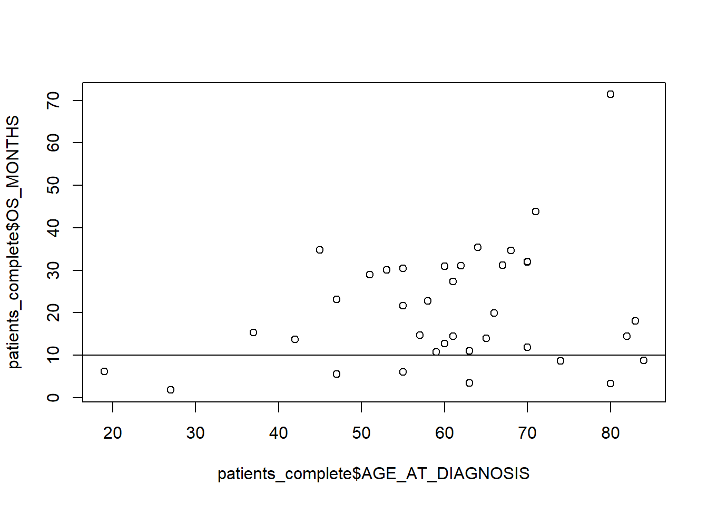
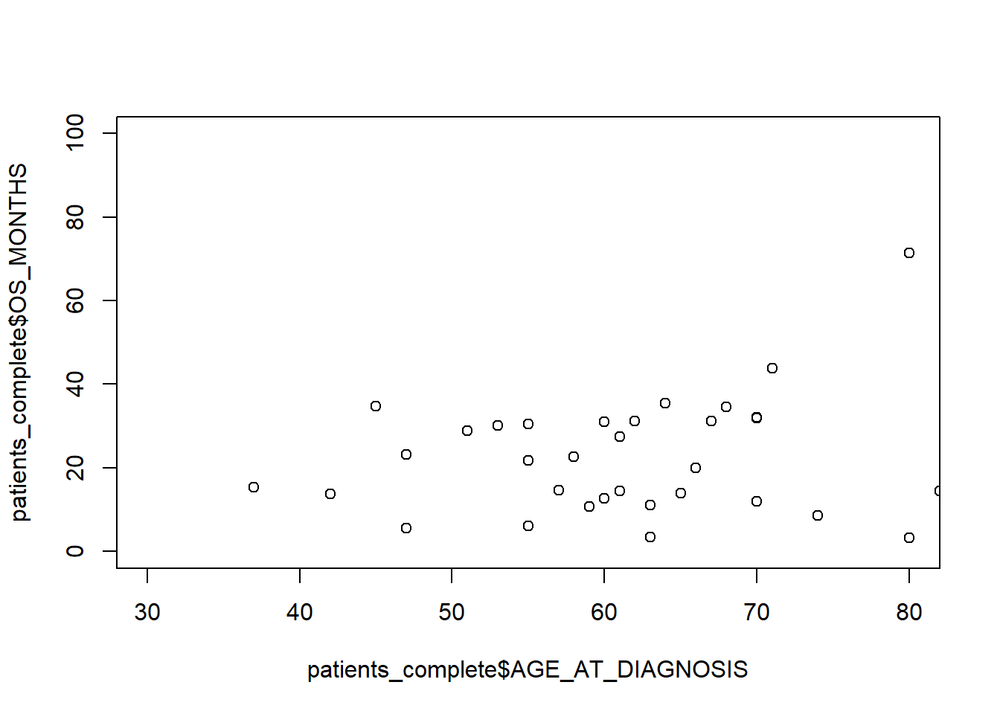
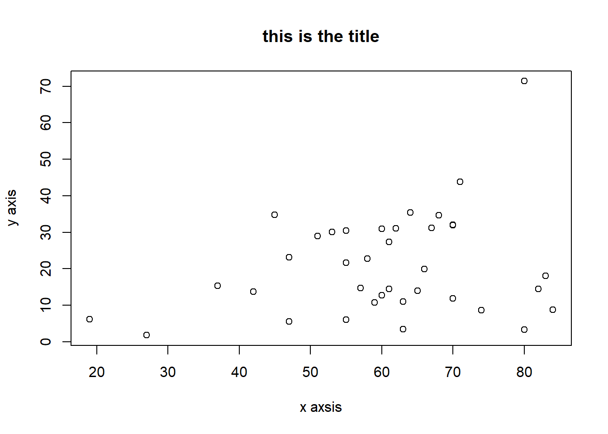
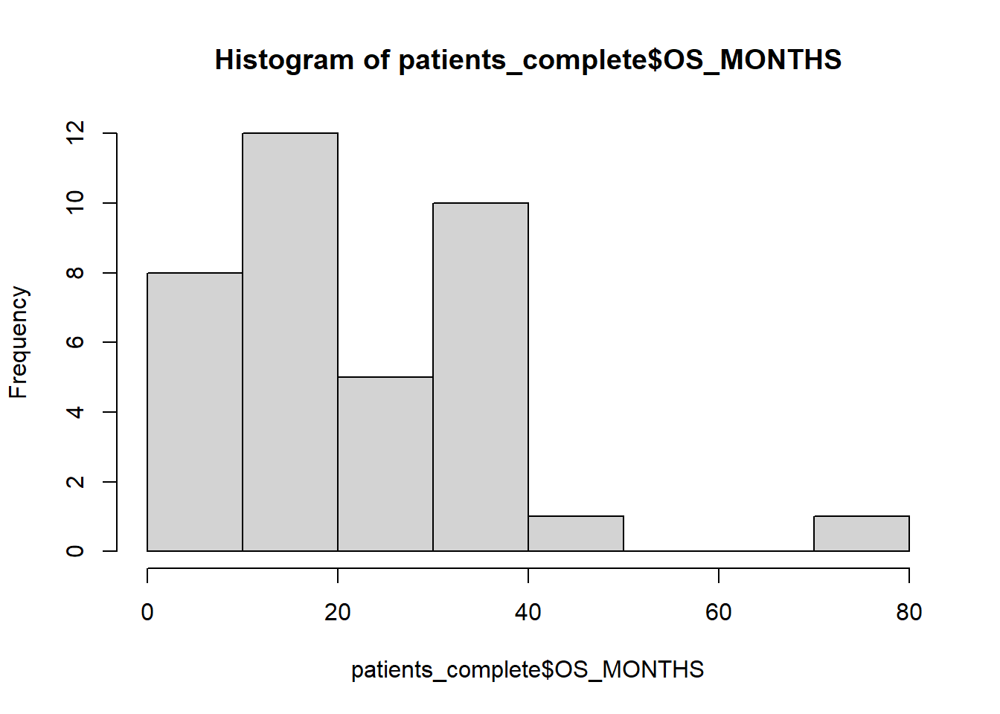
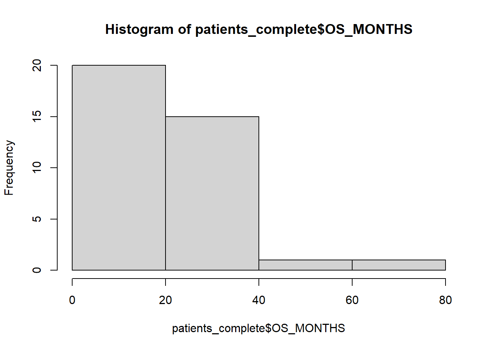
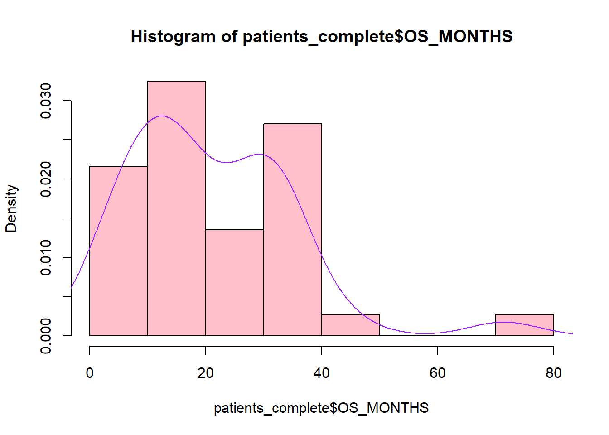
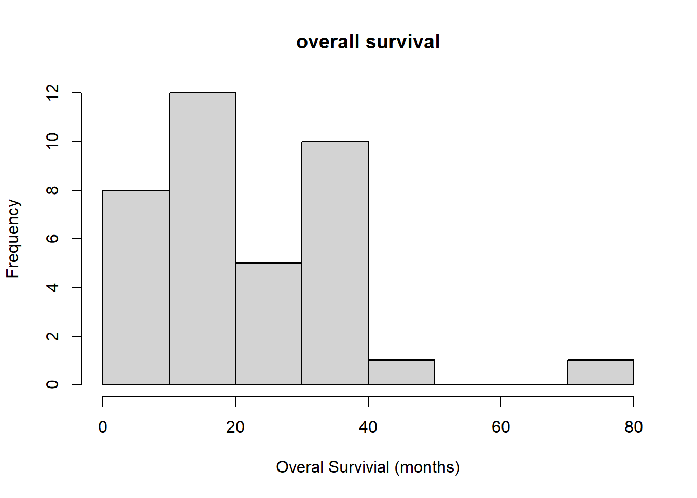
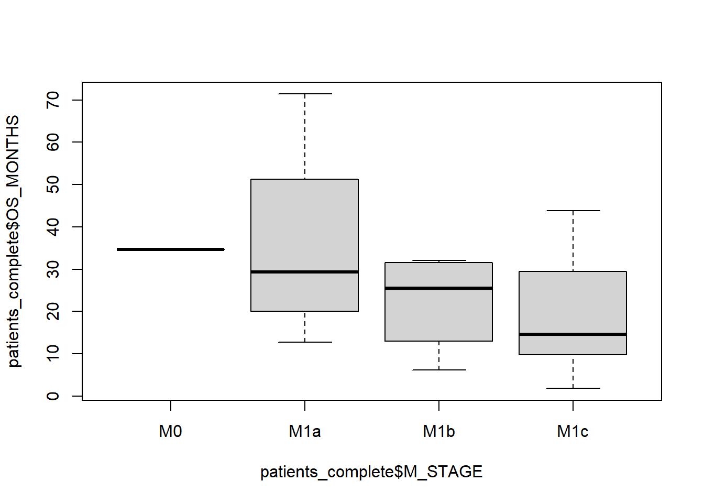
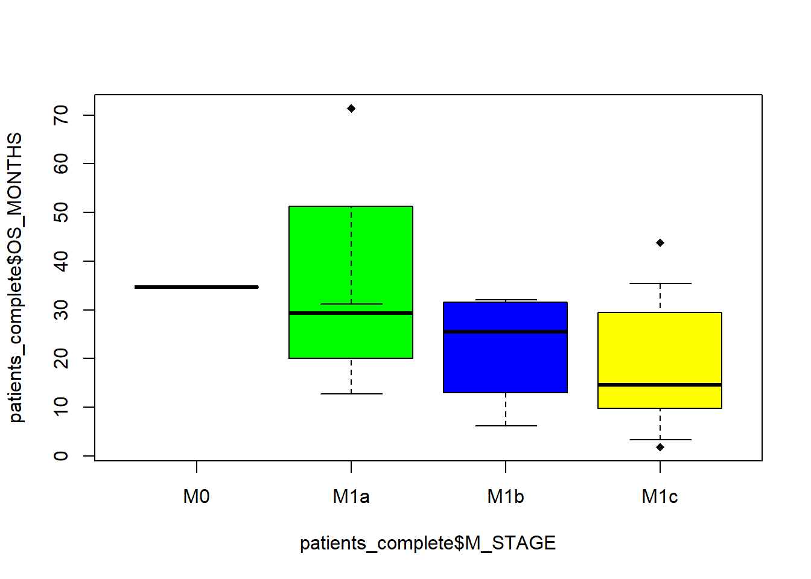

session 1
Welcome to the First session! By now the basic thing
Today, We’ll go over how variables can be and start analysing some patient data from TGCA.
Data Structures
We have seen variables can contain more than a single value. Depending on how many dimensions we need, there are several
vectors
a vector is a collection of items1. we create a vector by using the c(item1,item2,item3) function.
vector1 <- c(1, 2, 3, 4, 5)we can assign a name to each element in the vector by assigning a vector of names to the names() function
names(vector1) <- c("item1", "item2", "item3", "item4", "item5")or by providing them before the values when we create the vector.
vector1 <- c("item1" = 1, "item2" = 2, "item3" = 3, "item4" = 4)the names() can also be used alone to check the names of a vector
names(vector1)## [1] "item1" "item2" "item3" "item4"all items in a vector must be of the same type if we try to mix, for instance letters and numbers, R will force all items to be the most general type. The character type is the most general type.
vector2 <- c(1,2L, 1+2i, "hi")typeof(vector2)## [1] "character"Try to come up with a case for why this could be problem.
lists
Lists are similar to vectors but can contain items of different types, without the need to cohere to the most general type
list <- list(2,1,"a")because of this lists are as whole of type list,
typeof(list)## [1] "list"the environment panel of RStudio can be used to easily see what a list contains
Another difference from vectors is that lists are recursive i.e a list can contain lists of things while a vector will always expand to a 1-dimensional flat structure
c(c(1,2),c(3,4))## [1] 1 2 3 4list(list("1","2"), list("3","4"))## [[1]]
## [[1]][[1]]
## [1] "1"
##
## [[1]][[2]]
## [1] "2"
##
##
## [[2]]
## [[2]][[1]]
## [1] "3"
##
## [[2]][[2]]
## [1] "4"try it yourself, create a list containing 3 items named item1, item2, item3 and print their names to screen. HINT: names in lists work similarly to vectors
named_list<- list(1,2,3)
names(named_list)<- c("item1", "item2", "item3")
names(named_list)## [1] "item1" "item2" "item3"matrices
matrices are tables, or precisely 2 dimensional vectors. Like vectors they can contain only one type of data we can create a matrix of sizes i, j by calling matrix(vector_with_data, nrow=i, ncol=j). unless we specify byrow = T, matrices are populated column by column
matrix(data=c(1,2,3,4), nrow = 2, ncol = 2)## [,1] [,2]
## [1,] 1 3
## [2,] 2 4matrix(data=c(1,2,3,4), nrow = 2, ncol = 2, byrow = T)## [,1] [,2]
## [1,] 1 2
## [2,] 3 4try to reproduce the matrix below
matrix(data=c(1,4,7,2,5,8,3,6,9), nrow = 3, ncol = 3)## [,1] [,2] [,3]
## [1,] 1 2 3
## [2,] 4 5 6
## [3,] 7 8 9naming a matrix has 2 layers of complexity,
Using names() will give a name to each value in the matrix
named_matrix <- matrix(data=c(1,2,3,4), nrow = 2, ncol = 2)
names(named_matrix) <- c("item1", "item2", "item3","item4")
names(named_matrix)## [1] "item1" "item2" "item3" "item4"To name rows and columns we need to call row.names or colnames respectively Note adding data, such as a sample id, in row names is a bad idea as row names are treated differently by many functions. You should use a specific column to store sample names and/or IDs .
row.names(named_matrix) <- c("row1","row2")
colnames(named_matrix) <- c("col1","col2")so now our matrix becomes
named_matrix## col1 col2
## row1 1 3
## row2 2 4
## attr(,"names")
## [1] "item1" "item2" "item3" "item4"note how value names are stored as a attribute. Because column names and row id should identify each item in a matrix you will rarely come across a use for named values in a matrix.
data frames
data frames are the most commonly used structure in R as they are the closest to a spreadsheet or a table. like matrices they are 2-dimensional but can contain elements of different types, as long as all the values in each column are the same type.
we can create a data frame with data.frame, with columns separated by a comma
data.frame(c(2,3),c(3,3),c("hi", "hello"))## c.2..3. c.3..3. c..hi....hello..
## 1 2 3 hi
## 2 3 3 hellowe can also bundle vectors to create a data frame.
vector1 <- c("A","B","C","D","E")
vector2 <- c(1,3,4,5,2)
frame <- data.frame(vector1, vector2)
frame## vector1 vector2
## 1 A 1
## 2 B 3
## 3 C 4
## 4 D 5
## 5 E 2as with matrices we can rename the two columns. Try renaming the first column to sample and the second to position.
colnames(frame)<- c("sample", "position")
frame## sample position
## 1 A 1
## 2 B 3
## 3 C 4
## 4 D 5
## 5 E 2Remember, Unlike excel however, formulas are recorded in your script/console, not the data frame itself.
Reading Tabular Data
We have seen we can represent tabular data in R with a data frame, Bu how do we get such data into R?
There are two main formats to move tabular data. Tab separated values (.tsv) and comma separated values (.csv) Both are considered plain text files as they are simple text files with columns separated by a delimiter character. In a csv file columns are separated by a comma, while a tsv file values are separated by a tab
Both formats can be opened and saved in excel, although you may need to specify the separator for TSV files.
In R we can read a table from plain text file with read.table() we need to specify the separator, in the tab separated case it is \t Remember to assign the table to a variable to store the content of the file in memory as a data frame
data <- read.table("table.txt", sep = "\t")if we are reading a csv file we can use read.csv. There is no underlying difference with read.table but the defaults are adjusted for a csv file
data <- read.csv("table.csv")blank spaces as automatically treated as missing data. Other conventons exists, so we e can specify a character that is interpreted as missing values to ensure R can represent them as NA with na_strings
data <- read.csv()Bioinformatics data in Base R
Tab separated values are incredibly common in bioinformatics, For instance bed files, VCF and Maf files are all TSV. Hover, sp,eto,es these formats have headers used to describe the content of which are not in table format.
As headers start with a specific character we can tell R to ignore them with comment, Bbe careful as this will likely remove useful information from the file.
now open the data_clinical_patient.tsv file from the setup folder and save it as data, mark # as the comment character set the header argument to true with the header imported into R. Use “na” and “missing” as the na.strings argument Hint you can pass a vector to na.strings() Remember to set the working directory to the right location first!
patients <- read.table("mel_ucla_2016/data_clinical_patient.txt", sep="\t", comment.char = "#", header=T)Maths
maths operators in R work as expected
2+2## [1] 42-1## [1] 11*5## [1] 51/5## [1] 0.2if we are interested in the integer part of a division we can use the integer division operator
7%/%2## [1] 3we can use the modulus operator %% to calculate the remainder
7%%2## [1] 1in R exponents are represented with ** or ^
10**2## [1] 10010^2## [1] 10010ⁿ can be shortened to en
1e2## [1] 100We can apply maths to vectors too, in this case the operation will be applied to every element of the vector.
For instance can increase
vector2 + 1## [1] 2 4 5 6 3when using operations on 2 vectors we apply it element by element.
c(2, 3, 4) + c(3, 2, 4)## [1] 5 5 8Subsetting data
Most of the times we are interested in only a subset of the data R makes
Subsetting vectors
In R items are numbered from 1 (unlike most programming languages which start from 0). we can use the [index] operator to retrieve the element at that index
vector1[2]## [1] "B"try to select items 1 and 3 from vector1. Hint you can use a vector of indices as your index
vector1[c(1,3)]## [1] "A" "C"we can also use : to return a sequence of numbers and use it to choose all elements from x to y (inclusive)
vector1[2:4]## [1] "B" "C" "D"Now try selecting all items from 1 to 3 and item 5.
vector1[c(1:3,5)]## [1] "A" "B" "C" "E"Subsetting matrices and data frames
for a table the [index] syntax will return the specified column(s)
patients[1]## PATIENT_ID
## 1 Pt1
## 2 Pt10
## 3 Pt11
## 4 Pt12
## 5 Pt13
## 6 Pt14
## 7 Pt15
## 8 Pt16
## 9 Pt17
## 10 Pt18
## 11 Pt19
## 12 Pt2
## 13 Pt20
## 14 Pt21
## 15 Pt22
## 16 Pt23
## 17 Pt24
## 18 Pt25
## 19 Pt26
## 20 Pt27
## 21 Pt28
## 22 Pt29
## 23 Pt3
## 24 Pt30
## 25 Pt31
## 26 Pt32
## 27 Pt33
## 28 Pt34
## 29 Pt35
## 30 Pt36
## 31 Pt37
## 32 Pt38
## 33 Pt4
## 34 Pt5
## 35 Pt6
## 36 Pt7
## 37 Pt8
## 38 Pt9We can get a specific record by to providing both a row and a column number in the [row, column] order
patients[3,1]## [1] "Pt11"you can choose all rows or columns by not specifying anything before or after the comma, respectively. Thus this selects all rows for OS .
patients[,2]## [1] "1:DECEASED" "0:LIVING" "1:DECEASED" "1:DECEASED" "0:LIVING" "0:LIVING" "1:DECEASED"
## [8] "1:DECEASED" "1:DECEASED" "0:LIVING" "0:LIVING" "0:LIVING" "1:DECEASED" "1:DECEASED"
## [15] "1:DECEASED" "1:DECEASED" "1:DECEASED" "1:DECEASED" "0:LIVING" "0:LIVING" "1:DECEASED"
## [22] "1:DECEASED" "1:DECEASED" "1:DECEASED" "0:LIVING" "1:DECEASED" "0:LIVING" "0:LIVING"
## [29] "0:LIVING" "1:DECEASED" "0:LIVING" "0:LIVING" "0:LIVING" "0:LIVING" "0:LIVING"
## [36] "1:DECEASED" "0:LIVING" "0:LIVING"While here we get all the columns for row 2.
frame[2,]## sample position
## 2 B 3Subsetting with [[]]
we use [[]] to return one value rather than a vector, a data frame or a list containing the values we choose.
Note a column in a data frame is considered one value
frame[[1]]## [1] "A" "B" "C" "D" "E"$ is a shorthand for [[]] in data frames. We can use it conveniently select a column by name.
frame$sample## [1] "A" "B" "C" "D" "E"Reverse subsetting
we can also operate in reverse i.e choose what to eliminate by adding - to the elements we do not wish to keep
frame[-1,]## sample position
## 2 B 3
## 3 C 4
## 4 D 5
## 5 E 2sadly we cannot mix both approaches within the same selection
frame[c(-1,2),1]## Error in xj[i]: only 0's may be mixed with negative subscriptsalthough we get away with it if we use a consistent approach
frame[-3,1]## [1] "A" "B" "D" "E"Boolean expressions
subsetting becomes very powerful when used with logical operators. Logical operators allow us to select all items that match a given condition.
most operators are intuitive, although checking if something is equal is done with == rather than = because = is already used to assign values to variables
| symbol | operator |
|---|---|
| == | equal to |
| > | more than |
| < | less than |
| >= | more than or equal to |
| <= | less than or equal to |
So if 1 is bigger than 2, the following should be true
1>2## [1] FALSEA special case is the not operator or !, put it before any expression to invert the result
!(1>2)## [1] TRUE== and ! can be combined as !=, hence the two expression below are equivalent
(!1==2)==(1!=2)## [1] TRUEcomparisons with NAs return NA
1>NA## [1] NAto check if something is NA we cannot use == but need to use is.na()
NA==NA## [1] NAis.na(NA)## [1] TRUE%in% attempts to match elements from a in b, regardless of the order in b
c(1,2,3) %in% c(3,2,1)## [1] TRUE TRUE TRUEWhereas == would return false for 1 and 3
c(1,2,3) == c(3,2,1)## [1] FALSE TRUE FALSEoperators work on characters too, but in a slighly different way
>, <, <=, >= work on alphabetical order
"a">"b"## [1] FALSE"barts" < "blizzard"## [1] TRUEHowever matching characters gets funny, and we’ll see how to deal with them in session 2.
"a" %in% "aereoplane"## [1] FALSEMultiple operators can be combined with And & is true only when both expressions are true
1<2 & 3>4## [1] FALSEOr | is true when any expression is true, including when both are true
1<2 | 3>4## [1] TRUEor is also true when both are true
1<2 | 3<4## [1] TRUEif we want to return false when both are true we can use the exclusive or xor(expression 1, expression 2)
xor(1<2, 3<4)## [1] FALSElike maths operators when used on vectors, the logical operators can compare two vectors element by element based on their index
c(1,2,3)<c(2,3,4)## [1] TRUE TRUE TRUEAgain, the 2 vectors should have the same length, or be a multiple of each other.
c(1,2,3,4)<c(2,3,4,5) & c(2,3)>(c(1,2))## [1] TRUE TRUE TRUE TRUEIf we are only interested in the first element we can use && or || to only examine the first element. USE AT YOUR OWN RISK
c(1,2,3)<c(2,3,4) && c(2,3,3)>(c(1,2,3))## [1] TRUEsubsetting with boolean expressions
Now let’s try to subset our table to choose only patients (rows) that were diagnosed after 65. Hint: you will need to use a boolean expression for the AGE_AT_DIAGNOSIS column within the row subsetting of the patients data frame and use , to select all rows.
patients[patients$AGE_AT_DIAGNOSIS>65,]## PATIENT_ID OS_STATUS OS_MONTHS SEX AGE_AT_DIAGNOSIS TREATMENT DURABLE_CLINICAL_BENEFIT
## 1 Pt1 1:DECEASED 19.9 Female 66 Pembrolizumab PD
## 7 Pt15 1:DECEASED 32.1 Male 70 Pembrolizumab PR
## 9 Pt17 1:DECEASED 31.2 Male 67 Pembrolizumab PD
## 17 Pt24 1:DECEASED 31.9 Male 70 Pembrolizumab PR
## 18 Pt25 1:DECEASED 8.6 Male 74 Pembrolizumab PD
## 19 Pt26 0:LIVING 43.8 Male 71 Pembrolizumab CR
## 20 Pt27 0:LIVING 18.0 Male 83 Pembrolizumab CR
## 21 Pt28 1:DECEASED 14.4 Male 82 Pembrolizumab PR
## 22 Pt29 1:DECEASED 8.8 Male 84 Pembrolizumab PD
## 24 Pt30 1:DECEASED 3.3 Female 80 Pembrolizumab PD
## 27 Pt33 0:LIVING 71.4 Female 80 Nivolumab CR
## 31 Pt37 0:LIVING 11.9 Female 70 Pembrolizumab PR
## 37 Pt8 0:LIVING NA Male 69 Pembrolizumab CR
## 38 Pt9 0:LIVING 34.6 Male 68 Pembrolizumab CR
## M_STAGE PREVIOUS_MAPKI
## 1 M1b No
## 7 M1b Yes
## 9 M1a No
## 17 M1c No
## 18 M1c Yes
## 19 M1c Yes
## 20 M1c No
## 21 M1c No
## 22 M1c Yes
## 24 M1c No
## 27 M1a No
## 31 M1c Yes
## 37 M1a No
## 38 M0 NoData wrangling and manipulation
Often most of the work in R involves manipulating the data until it is in a usable format. Base R has many although not all. For easier manipulation we’ll introduce the tidyr package in session2.
Recoding values
Sometimes we may need to recede a value, either because R has not identified it as NA or as part of routine data manipulation. We can recode all values by subsetting the values needed and assigning their replacemnet value
for instance we can replace the sample in the dataframe we made at the beginning with a number
frame[frame$sample=="A","sample"] <- "sample A"
frame[frame$sample=="B","sample"] <- "sample B"
frame[frame$sample=="C","sample"] <- "sample C"
frame[frame$sample=="D","sample"] <- "sample D"
frame[frame$sample=="E","sample"] <- "sample E"
frame## sample position
## 1 sample A 1
## 2 sample B 3
## 3 sample C 4
## 4 sample D 5
## 5 sample E 2try. HINT select
Sometimes we can have a NA or a character which forces, for instance. we can get rid of that by recoding it to a number.
However, this does not force everything to become a number again, for that we need to convert the with the as.numeric() function.
adding rows and columns
we can add rows to an existing columns
A common use case of this is to bring data and metadata together in a single table. for instance we have the condition and doubling time information for a series of samples in 2 different tables. This is of course a toy example and it makes no sense to split those table but for more complex data it makes sense to have the data and metadata in separate table
let’s read two data frames
data <- read.csv("C:/Users/deange01/Desktop/simple_data.csv")
meta <- read.csv("C:/Users/deange01/Desktop/simple_meta.csv")cbind(data,meta[2])we can add further rows, for instance now we’ll create a new data frame with samples 11 to 20, by adding 10 to the sample name
extra_data <- data
extra_data$sample <- extra_data$sample+10we can now bind both data into a single data frame with rbind
rbind(data, extra_data)For now this relies on the rows being identical and all in the same order we’ll see how to deal with partial matches, and how to reconcile tables by an id variable in session 2.
dealing with NAs
missing <- c(NA,NA,NA,NA,1,2,1,1,1,2,3)NAs can confound some calculations
mean(missing)## [1] NASome functions, such as mean can be told to remove NAs from the computation using na.rm = T
mean(missing, na.rm = T)## [1] 1.571429We can manually remove all cases of NAs with na.omit(). if runnning on a data frame it will remove the whole rows consisting of all incomplete cases.
na.omit(as.data.frame(missing))## missing
## 5 1
## 6 2
## 7 1
## 8 1
## 9 1
## 10 2
## 11 3DIY renove NAs from the table and save the new data in a variable called patients_complete
patients_complete <- na.omit(patients)transposing
the transpose operator t() swaps the columns and the rows in a dataframe
t(patients)## [,1] [,2] [,3] [,4]
## PATIENT_ID "Pt1" "Pt10" "Pt11" "Pt12"
## OS_STATUS "1:DECEASED" "0:LIVING" "1:DECEASED" "1:DECEASED"
## OS_MONTHS "19.9" "12.7" "15.3" "10.7"
## SEX "Female" "Male" "Male" "Male"
## AGE_AT_DIAGNOSIS "66" "60" "37" "59"
## TREATMENT "Pembrolizumab" "Pembrolizumab" "Pembrolizumab" "Pembrolizumab"
## DURABLE_CLINICAL_BENEFIT "PD" "PD" "PD" "PD"
## M_STAGE "M1b" "M1a" "M1c" "M1c"
## PREVIOUS_MAPKI "No" "Yes" "No" "No"
## [,5] [,6] [,7] [,8]
## PATIENT_ID "Pt13" "Pt14" "Pt15" "Pt16"
## OS_STATUS "0:LIVING" "0:LIVING" "1:DECEASED" "1:DECEASED"
## OS_MONTHS "30.1" " 1.8" "32.1" " 6.1"
## SEX "Female" "Female" "Male" "Male"
## AGE_AT_DIAGNOSIS "53" "27" "70" "19"
## TREATMENT "Pembrolizumab" "Pembrolizumab" "Pembrolizumab" "Pembrolizumab"
## DURABLE_CLINICAL_BENEFIT "CR" "PD" "PR" "PD"
## M_STAGE "M1c" "M1c" "M1b" "M1b"
## PREVIOUS_MAPKI "No" "No" "Yes" "Yes"
## [,9] [,10] [,11] [,12]
## PATIENT_ID "Pt17" "Pt18" "Pt19" "Pt2"
## OS_STATUS "1:DECEASED" "0:LIVING" "0:LIVING" "0:LIVING"
## OS_MONTHS "31.2" "35.4" "34.8" "30.4"
## SEX "Male" "Male" "Male" "Male"
## AGE_AT_DIAGNOSIS "67" "64" "45" "55"
## TREATMENT "Pembrolizumab" "Pembrolizumab" "Pembrolizumab" "Pembrolizumab"
## DURABLE_CLINICAL_BENEFIT "PD" "PR" "PR" "PR"
## M_STAGE "M1a" "M1c" "M1c" "M1c"
## PREVIOUS_MAPKI "No" "No" "No" "No"
## [,13] [,14] [,15] [,16]
## PATIENT_ID "Pt20" "Pt21" "Pt22" "Pt23"
## OS_STATUS "1:DECEASED" "1:DECEASED" "1:DECEASED" "1:DECEASED"
## OS_MONTHS "11.0" "31.0" " 6.0" " 3.4"
## SEX "Female" "Male" "Male" "Male"
## AGE_AT_DIAGNOSIS "63" "60" "55" "63"
## TREATMENT "Pembrolizumab" "Pembrolizumab" "Pembrolizumab" "Pembrolizumab"
## DURABLE_CLINICAL_BENEFIT "PD" "PR" "PD" "PD"
## M_STAGE "M1c" "M1b" "M1c" "M1c"
## PREVIOUS_MAPKI "No" "No" "No" "Yes"
## [,17] [,18] [,19] [,20]
## PATIENT_ID "Pt24" "Pt25" "Pt26" "Pt27"
## OS_STATUS "1:DECEASED" "1:DECEASED" "0:LIVING" "0:LIVING"
## OS_MONTHS "31.9" " 8.6" "43.8" "18.0"
## SEX "Male" "Male" "Male" "Male"
## AGE_AT_DIAGNOSIS "70" "74" "71" "83"
## TREATMENT "Pembrolizumab" "Pembrolizumab" "Pembrolizumab" "Pembrolizumab"
## DURABLE_CLINICAL_BENEFIT "PR" "PD" "CR" "CR"
## M_STAGE "M1c" "M1c" "M1c" "M1c"
## PREVIOUS_MAPKI "No" "Yes" "Yes" "No"
## [,21] [,22] [,23] [,24]
## PATIENT_ID "Pt28" "Pt29" "Pt3" "Pt30"
## OS_STATUS "1:DECEASED" "1:DECEASED" "1:DECEASED" "1:DECEASED"
## OS_MONTHS "14.4" " 8.8" "22.7" " 3.3"
## SEX "Male" "Male" "Male" "Female"
## AGE_AT_DIAGNOSIS "82" "84" "58" "80"
## TREATMENT "Pembrolizumab" "Pembrolizumab" "Pembrolizumab" "Pembrolizumab"
## DURABLE_CLINICAL_BENEFIT "PR" "PD" "PR" "PD"
## M_STAGE "M1c" "M1c" "M1c" "M1c"
## PREVIOUS_MAPKI "No" "Yes" "No" "No"
## [,25] [,26] [,27] [,28] [,29]
## PATIENT_ID "Pt31" "Pt32" "Pt33" "Pt34" "Pt35"
## OS_STATUS "0:LIVING" "1:DECEASED" "0:LIVING" "0:LIVING" "0:LIVING"
## OS_MONTHS "23.1" " 5.6" "71.4" "13.7" "14.0"
## SEX "Male" "Male" "Female" "Male" "Female"
## AGE_AT_DIAGNOSIS "47" "47" "80" "42" "65"
## TREATMENT "Pembrolizumab" "Pembrolizumab" "Nivolumab" "Pembrolizumab" "Pembrolizumab"
## DURABLE_CLINICAL_BENEFIT "PD" "PD" "CR" "CR" "PR"
## M_STAGE "M1c" "M1c" "M1a" "M1c" "M1c"
## PREVIOUS_MAPKI "No" "Yes" "No" "Yes" "Yes"
## [,30] [,31] [,32] [,33] [,34]
## PATIENT_ID "Pt36" "Pt37" "Pt38" "Pt4" "Pt5"
## OS_STATUS "1:DECEASED" "0:LIVING" "0:LIVING" "0:LIVING" "0:LIVING"
## OS_MONTHS "27.4" "11.9" "14.7" "31.1" "14.4"
## SEX "Female" "Female" "Female" "Male" "Male"
## AGE_AT_DIAGNOSIS "61" "70" "57" "62" "61"
## TREATMENT "Nivolumab" "Pembrolizumab" "Pembrolizumab" "Pembrolizumab" "Pembrolizumab"
## DURABLE_CLINICAL_BENEFIT "PD" "PR" "PR" "PR" "PR"
## M_STAGE "M1a" "M1c" "M1c" "M1c" "M1c"
## PREVIOUS_MAPKI "No" "Yes" "Yes" "Yes" "No"
## [,35] [,36] [,37] [,38]
## PATIENT_ID "Pt6" "Pt7" "Pt8" "Pt9"
## OS_STATUS "0:LIVING" "1:DECEASED" "0:LIVING" "0:LIVING"
## OS_MONTHS "28.9" "21.7" NA "34.6"
## SEX "Male" "Female" "Male" "Male"
## AGE_AT_DIAGNOSIS "51" "55" "69" "68"
## TREATMENT "Pembrolizumab" "Pembrolizumab" "Pembrolizumab" "Pembrolizumab"
## DURABLE_CLINICAL_BENEFIT "PR" "PD" "CR" "CR"
## M_STAGE "M1c" "M1c" "M1a" "M0"
## PREVIOUS_MAPKI "Yes" "No" "No" "No"This becomes particularly useful with genome data as some tools will require each patient to be its own row or column, depending on how it is designed.
Data Analysis
we can now start to explore the rows in our table
summary statistics
we can get an overall summary of all the values with the summary() function
summary(frame)## sample position
## Length:5 Min. :1
## Class :character 1st Qu.:2
## Mode :character Median :3
## Mean :3
## 3rd Qu.:4
## Max. :5summary(patients)## PATIENT_ID OS_STATUS OS_MONTHS SEX AGE_AT_DIAGNOSIS
## Length:38 Length:38 Min. : 1.80 Length:38 Min. :19.00
## Class :character Class :character 1st Qu.:11.00 Class :character 1st Qu.:55.00
## Mode :character Mode :character Median :18.00 Mode :character Median :61.50
## Mean :20.97 Mean :60.53
## 3rd Qu.:31.00 3rd Qu.:69.75
## Max. :71.40 Max. :84.00
## NA's :1
## TREATMENT DURABLE_CLINICAL_BENEFIT M_STAGE PREVIOUS_MAPKI
## Length:38 Length:38 Length:38 Length:38
## Class :character Class :character Class :character Class :character
## Mode :character Mode :character Mode :character Mode :character
##
##
##
## this is not the case for factors where the summary function returns an useful summary of how many times each factor occurs. For instance we can create a new data frame with the first 3 rows and ask R to treat them as a factor with stringsAsFactors = T
factor_patients <- data.frame(patients$PATIENT_ID, patients$OS_STATUS, patients$OS_MONTHS, stringsAsFactors = T)
summary(factor_patients)## patients.PATIENT_ID patients.OS_STATUS patients.OS_MONTHS
## Pt1 : 1 0:LIVING :19 Min. : 1.80
## Pt10 : 1 1:DECEASED:19 1st Qu.:11.00
## Pt11 : 1 Median :18.00
## Pt12 : 1 Mean :20.97
## Pt13 : 1 3rd Qu.:31.00
## Pt14 : 1 Max. :71.40
## (Other):32 NA's :1we can explore how many elements are in an object with length. Similar to subsetting, length on a data frame returns the number of columns
length(frame)## [1] 2we can explicitly check how many rows and columns a data frame has with nrow and ncol
nrow(frame)## [1] 5ncol(frame)## [1] 2for instance how many rows are there in the patient data frame before and after removing incomplete cases?
nrow(patients)## [1] 38nrow(patients_complete)## [1] 37Makes sense, given there was a single NA in the data.
for categorical variables, factor or characters, we can use the table() function to return the counts of each items.
table(frame$sample)##
## sample A sample B sample C sample D sample E
## 1 1 1 1 1let’s explore the metastatic stage (in the M_STAGE column) of the patients
table(patients_complete$M_STAGE)##
## M0 M1a M1b M1c
## 1 4 4 28Using table on numeric values is silly at best, for numbers we can use median or mean to get a measure of the central tendency of the data
median(patients_complete$OS_MONTHS)## [1] 18mean(patients_complete$OS_MONTHS)## [1] 20.97027we can use min() and max() to get the minimum and maximum values
min(patients_complete$OS_MONTHS)## [1] 1.8max(patients_complete$OS_MONTHS)## [1] 71.4they can be combined with a single call to range()
range(patients_complete$OS_MONTHS)## [1] 1.8 71.4we can calculate the interquartile range or the standard deviation with IQR and sd, respectively
IQR(patients_complete$OS_MONTHS)## [1] 20sd(patients_complete$OS_MONTHS)## [1] 14.02496common statistical tests:
As a statistic language R is loaded with a library of built in statistical functions, we’ll barely scratch the surface here! there are. Indeed for simplicity here we’ll use both approaches. In the real world we would make an educated guess at whether the data is approximately normal before choosing the parametric or non-parametric route and check whether assumptions are met before running any tests.
We’ll also very briefly discuss p-values. Note there is a whole world beyond p-values and lots of controversies over their (ab)use in biology see this Nature Editorial
parametric tests
The t-test is. In R, by default it uses the Welch variant that assumes an unequal variance, often a safe assumption. we need to provide 2 groups, we can do this by conditionally subsetting
t.test(x=patients_complete[patients_complete$PREVIOUS_MAPKI=="No", "OS_MONTHS"], y = patients_complete[patients_complete$PREVIOUS_MAPKI=="Yes", "OS_MONTHS"])##
## Welch Two Sample t-test
##
## data: patients_complete[patients_complete$PREVIOUS_MAPKI == "No", "OS_MONTHS"] and patients_complete[patients_complete$PREVIOUS_MAPKI == "Yes", "OS_MONTHS"]
## t = 1.4947, df = 31.623, p-value = 0.1449
## alternative hypothesis: true difference in means is not equal to 0
## 95 percent confidence interval:
## -2.429506 15.800935
## sample estimates:
## mean of x mean of y
## 23.50000 16.81429we can store the p-value in a vector by choosing p.val from the result of the test.
p_vals <- t.test(x=patients_complete[patients_complete$PREVIOUS_MAPKI=="No", "OS_MONTHS"], y = patients_complete[patients_complete$PREVIOUS_MAPKI=="Yes", "OS_MONTHS"])$p.valwe can get a one-way anova with the aov function. the syntax here is slighly odd, as we need to use the x ~ groups form. we also need to call summary to extract the P values and other information
anova <- aov(patients_complete$OS_MONTHS ~ patients_complete$M_STAGE)
summary(anova)## Df Sum Sq Mean Sq F value Pr(>F)
## patients_complete$M_STAGE 3 1273 424.3 2.411 0.0845 .
## Residuals 33 5808 176.0
## ---
## Signif. codes: 0 '***' 0.001 '**' 0.01 '*' 0.05 '.' 0.1 ' ' 1we can add our P value to the p values vector, to avoid overwriting we use the append function. Note summary(anova) returns a list, we can then subset until we get our P value.
anova <- aov(patients_complete$OS_MONTHS ~ patients_complete$M_STAGE)
p_vals <- append(p_vals, summary(anova)[[1]][5][1,1])non-paramtetric staistical tests,
the Wilcoxon rank sum test is a non parametric test simialr to a T-test. Indeed the wilcox.test() function works in a similar way
wilcox.test(x=patients_complete[patients_complete$PREVIOUS_MAPKI=="No", "OS_MONTHS"], y = patients_complete[patients_complete$PREVIOUS_MAPKI=="Yes", "OS_MONTHS"])## Warning in wilcox.test.default(x = patients_complete[patients_complete$PREVIOUS_MAPKI == : cannot
## compute exact p-value with ties##
## Wilcoxon rank sum test with continuity correction
##
## data: patients_complete[patients_complete$PREVIOUS_MAPKI == "No", "OS_MONTHS"] and patients_complete[patients_complete$PREVIOUS_MAPKI == "Yes", "OS_MONTHS"]
## W = 210, p-value = 0.1288
## alternative hypothesis: true location shift is not equal to 0We can again extract the p value an append it to our vector
p_vals <- append(p_vals,wilcox.test(x=patients_complete[patients_complete$PREVIOUS_MAPKI=="No", "OS_MONTHS"], y = patients_complete[patients_complete$PREVIOUS_MAPKI=="Yes", "OS_MONTHS"])$p.val)## Warning in wilcox.test.default(x = patients_complete[patients_complete$PREVIOUS_MAPKI == : cannot
## compute exact p-value with tiesThe Kruskal-Wallis rank sum test is often referred as a non parametric anova. we can run one with kruskal.test()
kruskal.test(patients_complete$OS_MONTHS ~ patients_complete$M_STAGE)##
## Kruskal-Wallis rank sum test
##
## data: patients_complete$OS_MONTHS by patients_complete$M_STAGE
## Kruskal-Wallis chi-squared = 4.235, df = 3, p-value = 0.2372getting the p-value is as easy as for the t and Wilcoxon tests
p_vals <- append(p_vals, kruskal.test(patients_complete$OS_MONTHS ~ patients_complete$M_STAGE)$p.val)Adjusting the P-Value
At the traditional level, we reject the null hypothesis at the p<0.05 level. Such p value of 0.05 represent a 1/20 chance of seeing a difference as big or greater by chance alone. It follows on then that if we have 20 comparisons we can expect one to be true by chance. Therefore, we need to adjust the p value to consider the number of comparisons/ The “p-ajust()” function can then correct the observed p values for multiple comparisons with many methods. for instance we can use a bonferroni correction3
p.adjust(p_vals, method="bonferroni")## [1] 0.5795994 0.3378689 0.5151183 0.9487212now do the same but with the false discovery rate (FDR)4 is. Hint type ?p.adjust to see what methods corresponds to FDR
p.adjust(p_vals, method="fdr")## [1] 0.1931998 0.1931998 0.1931998 0.2371803We can see the Bonferroni correction is more conservative than the FDR5
Base R Plots
base R plots can be displayed in the plots pane of R studio. Note R will refuse to draw a plot if the plot panel is too small. Simple R plots can be generated quickly with base functions but the ggplot2 package we’ll use in session 2, can generate publication quality plots with less effort.
R tracks every time we create a new plot so any items added to a plot get added to the lastly created plot.
Scatter plot
we can plot a scatter plot with plot(x, y)
plot(patients_complete$AGE_AT_DIAGNOSIS, patients_complete$OS_MONTHS)
we can add a trend line with abline(), following the format y=ax+b.
plot(patients_complete$AGE_AT_DIAGNOSIS, patients_complete$OS_MONTHS)
abline(a=1,b=+1)we can also add a vertical or horizontal line by specifying the intercept with h or v.
plot(patients_complete$AGE_AT_DIAGNOSIS, patients_complete$OS_MONTHS)
abline(h=10) We can also fit a line from more complex modeling, for instance from a linear regression. note lm takes a y ~ x order
plot(patients_complete$AGE_AT_DIAGNOSIS, patients_complete$OS_MONTHS)
abline(lm(patients_complete$OS_MONTHS ~ patients_complete$AGE_AT_DIAGNOSIS))
We can change the two axis. ylim and xlim control the start and end of x and y axis. Be careful as R will clip off any value outside that range, again without warning
plot(patients_complete$AGE_AT_DIAGNOSIS, patients_complete$OS_MONTHS, ylim=c(0,100),xlim=c(30,80))
We can also add a title and some label to the axis. We do this with main, xlab and ylab
plot(patients_complete$AGE_AT_DIAGNOSIS, patients_complete$OS_MONTHS, main="this is the title", ylab="y axis", xlab="x axsis")
Histograms
Histograms can be used to visualize the distribution of a variable. In base r we can generate one with hist
hist(patients_complete$OS_MONTHS) Again, we can control several parameters, We can manually specify the number of breaks rather than use what number R thinks appropriate
hist(patients_complete$OS_MONTHS, breaks=4) we can also add a colour
And add a density line. To do so we need to switch to plotting probabilities with probability=T in the hist function
hist(patients_complete$OS_MONTHS, col="pink", probability = T)
lines(density(patients_complete$OS_MONTHS), col="purple") Axis and plot labels work similarly to the scatter plot above, try to redo the first histogram but change the labels so they are nicer
hist(patients_complete$OS_MONTHS, ylab = "Frequency", xlab="Overal Survivial (months)", main = "overall survival")## Box plots
Box Plots
boxplot(patients_complete$OS_MONTHS~patients_complete$M_STAGE)By default the whiskers extend to 1.5x the interquartile range of each gruop. we can change the multiplier by specifying it to range.
boxplot(patients_complete$OS_MONTHS~patients_complete$M_STAGE, range=0.4) we can even control the shape of the outlier points with pch. ?points reveal what each value corresponds to.
boxplot(patients_complete$OS_MONTHS~patients_complete$M_STAGE, range=0.4, pch=18)
Now let’s add some colour to the plot. Try adding colours to the plot above with the “col” argument. hint, if you don’t want to have the groups use the same colour(s), specify a number of colours in the colour vector matching the number of groups
boxplot(patients_complete$OS_MONTHS~patients_complete$M_STAGE, range=0.4, pch=18, col=c("red","green","blue","yellow"))
Saving plots
In RStudio there are 2 ways to save a plot. you can select the export button on the plots panel. this opens a save window where you can save as pdf or image.
Alternatively, you can save plots automatically from your script. there are 2 step for this approach. first you need to choose a graphic device
pdf("plot.pdf")then generate your plot
plot(mtcars$hp~mtcars$mpg)your plot is now in the device. it will not be printed in rstudio. we can still add elements to it, for instance a trend line
abline(lm(mtcars$hp ~ mtcars$mpg))to save your plot you need to release the graphic devices
dev.off()the choice of device changes the output format. pdf() and svg() produce vector image where the each element of the plot is represented as a mathematical formula. This means you can zoom the image without loosing quality and easily edit the individual elements of the plots later. Although manually editing images outside the R script is rarely a good idea as you loose the ability to reproduce the plot. Text remains editable too. However, opening complex vector files (particularly those saved as svg) can be slow to view.
png/jpeg/tiff will produce raster images, these are similar to a photos, where unless it’s a police TV show, you cannot zoom and get a sharper image6
now go to your working directory and look for the plot. you should have gotten something like this
plot(mtcars$hp~mtcars$mpg)
abline(lm(mtcars$hp ~ mtcars$mpg))
Saving data
we can save files to a tabular format with write.table(). By default R add both rows and column names. row names can confuse Excel so should be avoided with row.names=F
write.table(frame, row.names = F, sep = ",", file="table.csv")Again, the write.csv() function is similar but has appropriate defaults for CSV files
By default. this encloses any string in ""
we can get rid of it by setting quotes=FALSE
write.table(frame, row.names = FALSE, sep = ",", file="table.csv", quote=FALSE)if append is true R will add the current data to the specified file without overwriting it.
The write.csv() function is similar but
In fact, unlike most languages in R any single variable that is not NULL is actually a vector of size 1↩︎
for instance, base R makes very heavy use of S3 objects. we can see an example in the model class resulting from lm(). when plotting it, the S3 system means the plot() function knows how to plot all the plots needed for a linear model. The reality is more complex and covered in advanced r↩︎
The bonferroni correction simply multiplies the p-value by the number of tests↩︎
The false discovery ratio is explained here instead↩︎
Personally, as a rule of thumb I prefer using FDRs for everything that will get downstream validation, so that the odd false discovery will be spotted↩︎